Operação Especializada de Teleprompter para Cinema, TV, Eventos e Shows. Em São Paulo desde 2019.
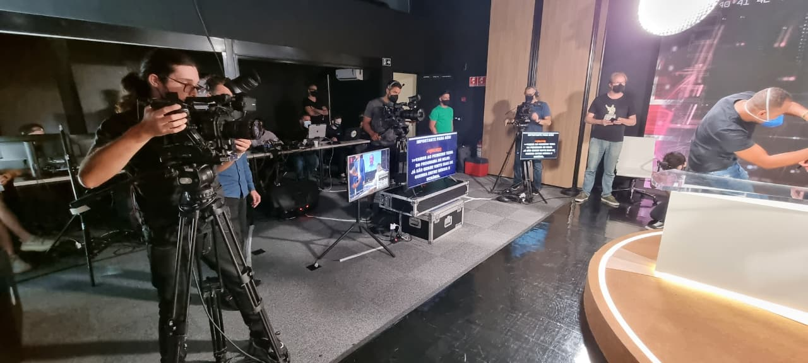
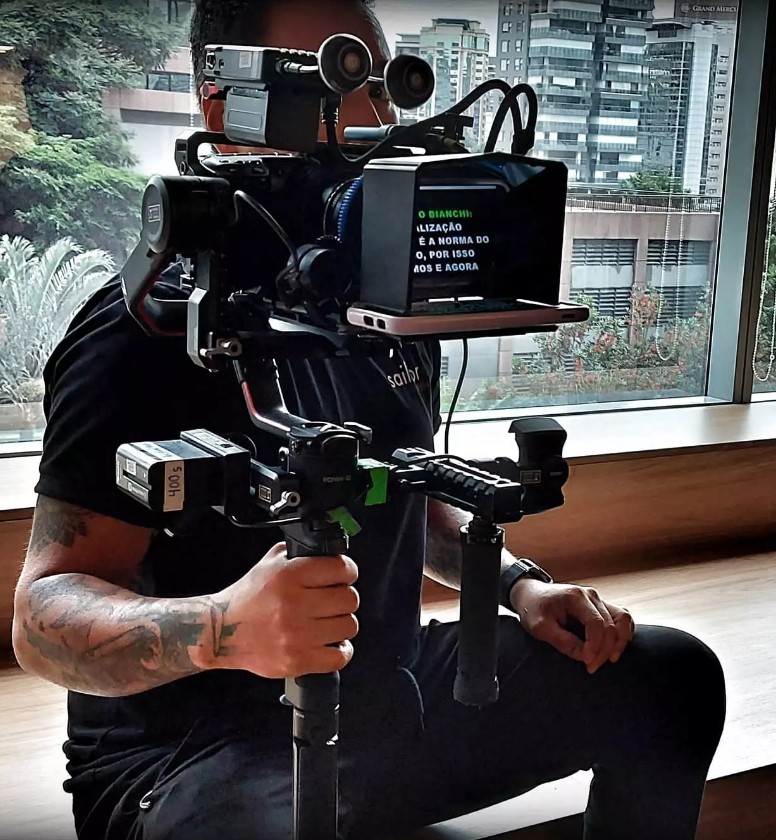
O Teleprompter tem por objetivo auxiliar na apresentação de discursos, palestras ou durante uma participação especial em um show, proporcionando de forma espontânea segurança com o tema apresentado.
Trabalhamos com equipamentos de alta performance e oferecemos um serviço de locação completo, assegurando excelência técnica, discrição operacional e atendimento diferenciado em cada projeto.
Estruturas práticas de montagem rápida, acabamento em pintura eletrostática preta e compatíveis com qualquer set profissional.
Indicado para imagens estáticas com câmeras fixas. Garante máxima visibilidade do texto com o monitor de 19 polegadas de alta taxa de contraste.
Sistema que acompanha movimentos fluidos de pan e tilt das câmeras nos tripés de produção. Alta tecnologia que não engasga no set.
Perfeito para filmagens em ambientes externos, locações compactas ou produções ágeis. Super leve, portátil e de montagem imediata.
Espelhos semirrefletores ajustáveis de altíssimo acabamento para discursos em palcos, convenções, campanhas políticas e eventos de diretoria.
Focado diretamente na lente e extremamente compacto para setups de estabilizadores tridimensionais, câmeras em movimento dinâmico ou portáteis.
Monitores robustos de 32 e 42 polegadas acoplados em estruturas blindadas pretas rente ao chão. Ideal para cantores em shows, bandas ou apresentadores de palco.
Alguns registros de nossa atuação e operações em comerciais, gravação de lives, eventos corporativos importantes e produções cinematográficas.
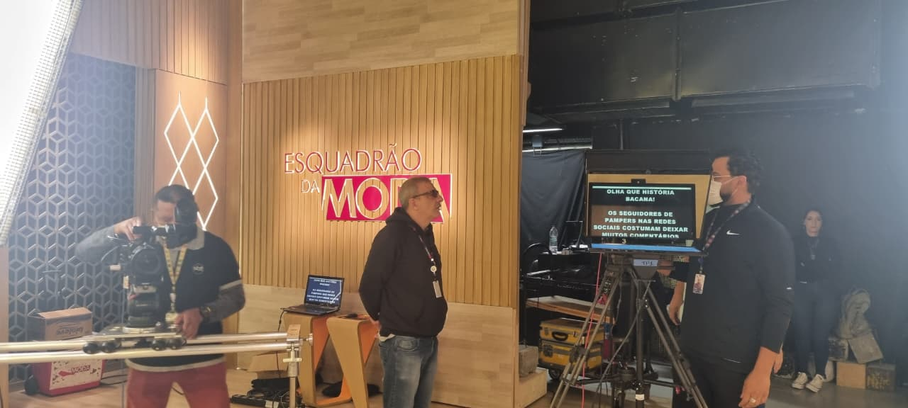
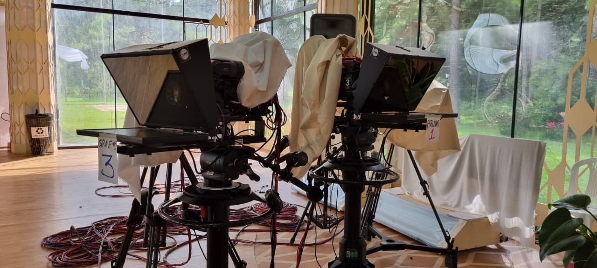
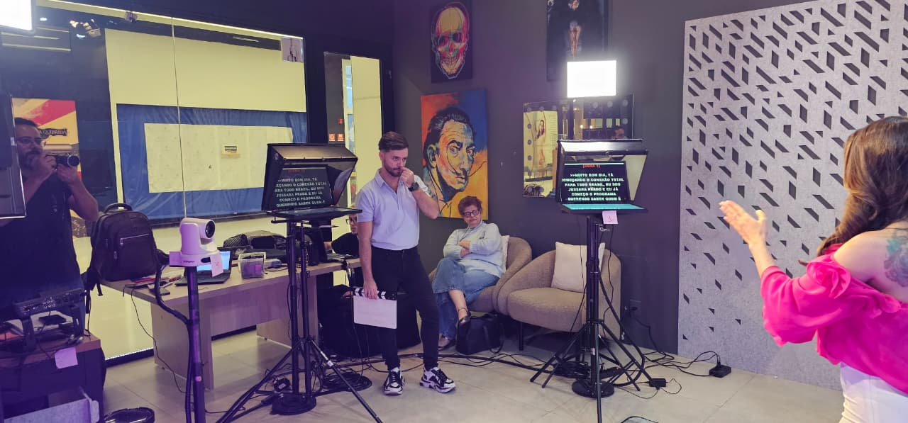
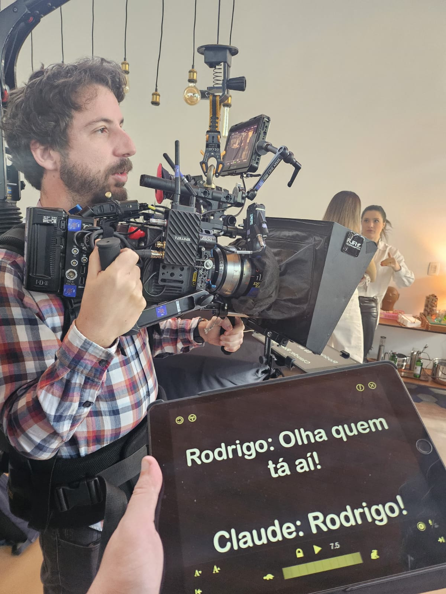
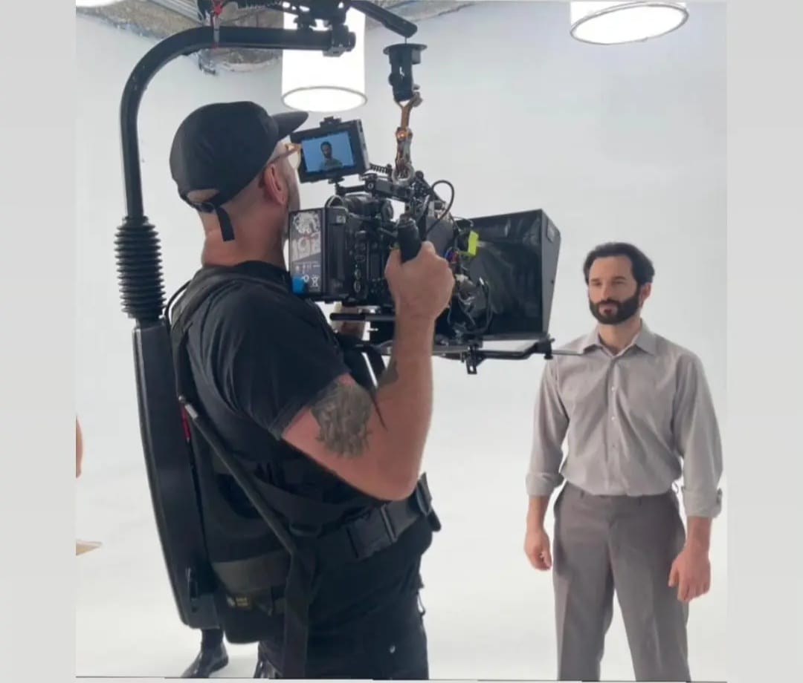
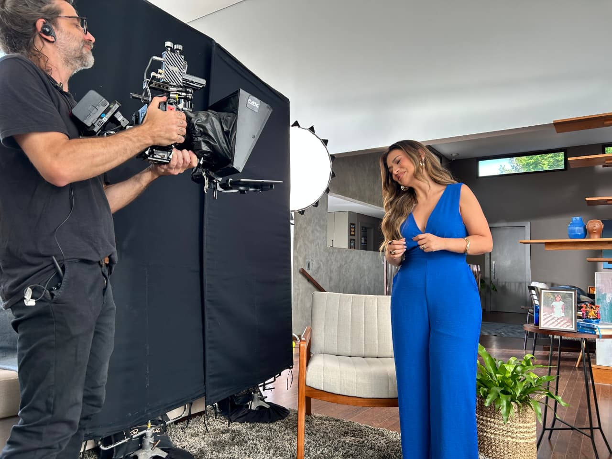
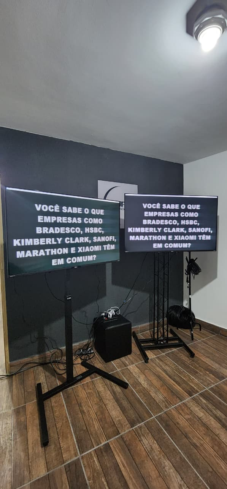
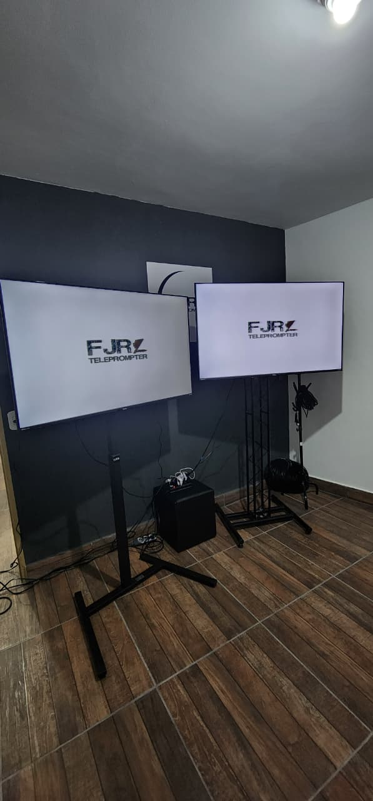
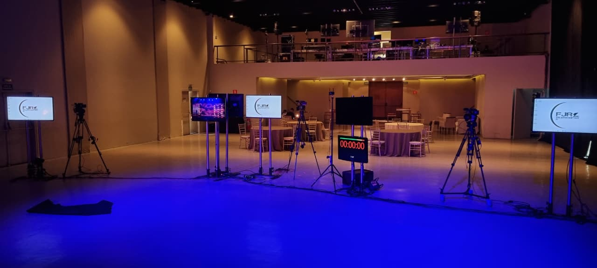
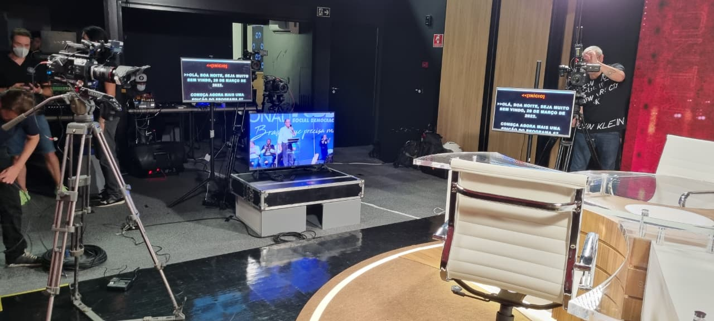
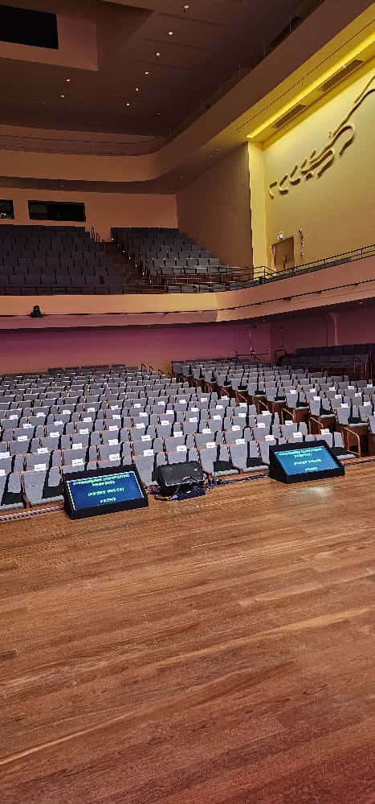
Fundada oficialmente em 2019 pelo ator e radialista **Flávio Almeida**, a FJR Teleprompter nasceu da necessidade real de simplificar, agilizar e dar naturalidade para apresentações no set.
Nossa equipe não aluga apenas equipamentos; nós fornecemos **operadores especializados** que acompanham todo o fluxo de gravação, editando o texto em tempo real de forma sincronizada com o ritmo do apresentador ou orador.
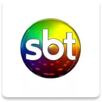
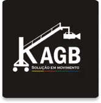
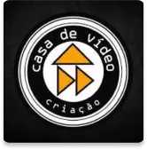
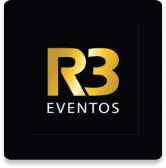
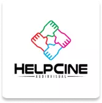
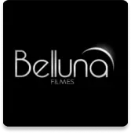
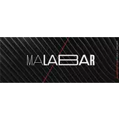
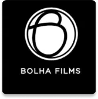